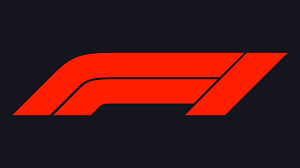
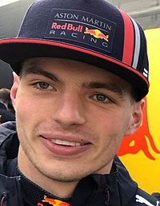
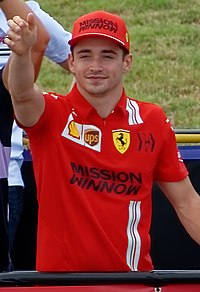
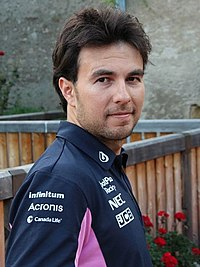

TEMPORADA FORMULA 1 2022
Top 3 temporada 2022
- Max Verstappen
- Charles Leclerc
- Sergio Pérez
Max Verstappen
O Max Emilian Verstappen (Hasselt,[3] 30 de setembro de 1997) é um automobilista neerlandês. Ele é piloto de Fórmula
1 desde 2015, tendo feito sua estreia pela equipe Toro Rosso. Foi duas vezes campeão da Fórmula 1 em 2021 e
2022,[4][5] e terminou em terceiro lugar em 2019 e 2020 com a Red Bull Racing, equipe pela qual corre desde
2016.[6][7

Charles Leclerc
Charles Marc Hervé Perceval Leclerc,[1] mais conhecido como Charles Leclerc, (Monte Carlo, 16 de outubro de 1997) é
um piloto de automóveis monegasco que compete na Fórmula 1 pela equipe Ferrari.[2]

Sergio Pérez
Sergio Michel Pérez Mendoza (Guadalajara, 26 de janeiro de 1990) é um automobilista mexicano que atua na Formula
1 e atualmente faz parte da grade de pilotos da equipe Red Bull Racing.[2]

Lista de equipes participantes
Alfa Romeo F1 Team
Scuderia AlphaTauri
BWT Alpine F1 Team[1
Aston Martin Aramco Cognizant F1 Team
Scuderia Ferrari
Haas F1 Team
McLaren F1 Team
Mercedes-AMG Petronas F1 Team[3
Oracle Red Bull Racing[43]
Williams Racing
INFORMAÇÕES POR GRANDE PRÊMIO
| Grande Prêmio |
Vencedor |
Equipe |
Grande Prêmio do Barém |
Charles Leclerc |
Ferrari |
| Grande Prêmio da Arábia Saudita |
Max Verstappen |
Red Bull Racing-RBPT |
Grande Prêmio da Austrália |
Charles Leclerc |
Ferrari |
| Grande Prêmio da Emília-Romanha |
Max Verstappen |
Red Bull Racing-RBPT |
Grande Prêmio de Miami |
Max Verstappen |
Red Bull Racing-RBPT |
| Grande Prêmio da Espanha |
Max Verstappen |
Red Bull Racing-RBPT |
Grande Prêmio de Mônaco |
Sergio Perez |
Red Bull Racing-RBPT |
| Grande Prêmio do Azerbaijão |
Max Verstappen |
Red Bull Racing-RBPT |
Grande Prêmio do Canadá |
Max Verstappen |
Red Bull Racing-RBPT |
| Grande Prêmio da Grã-Bretanha |
Carlos Sainz Jr. |
Ferrari |
Grande Prêmio da Áustria |
Charles Leclerc |
Ferrari |
| Grande Prêmio da França |
Max Verstappen |
Red Bull Racing-RBPT |
Grande Prêmio da Hungria |
Max Verstappen |
Red Bull Racing-RBPT |
| Grande Prêmio da Bélgica |
Max Verstappen |
Red Bull Racing-RBPT |
Grande Prêmio dos Países Baixos |
Max Verstappen |
Red Bull Racing-RBPT |
| Grande Prêmio da Itália |
Max Verstappen |
Red Bull Racing-RBPT |
Grande Prêmio de Singapura |
Sergio Perez |
Red Bull Racing-RBPT |
| Grande Prêmio do Japão |
Max Verstappen |
Red Bull Racing-RBPT |
Grande Prêmio dos Estados Unidos |
Max Verstappen |
Red Bull Racing-RBPT |
| Grande Prêmio da Cidade do México |
Max Verstappen |
Red Bull Racing-RBPT |
Grande Prêmio de São Paulo |
George Russell |
Mercedes |
| Grande Prêmio de Abu Dhabi |
Max Verstappen |
Red Bull Racing-RBPT |
Clique aqui para acessar as referências dos conteúdos